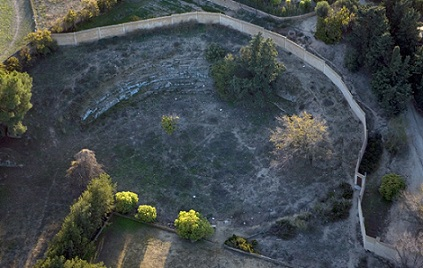
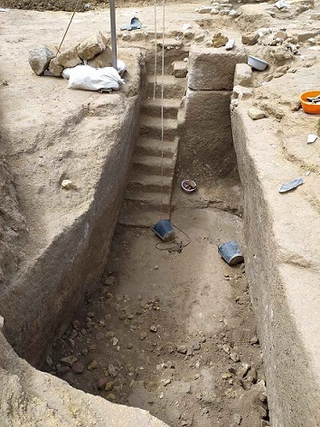

| ...Turdetanos..., de esta etapa época son los famosos relieves de la ciudad, como el Toro de Osuna y el alto relieve del soldado, llamado el flautista. La ciudad de Urso se fundó al noroeste de la actual ciudad y su nombre que hace referencia a la abundancia de osos en la zona. Sobre un primitivo poblado de época ibérica los partidarios de Pompeyo construyen fortificaciones para defenderse de las tropas de César, es el último reducto que resistió. Triunfante César, funda una nueva colonia algo más al sur por la falda de la colina hacia las tierras llanas meridionales. Tras la conquista se le da el estatuto de Colonia Iulia Genitiva , alcanzando un gran esplendor. Genitiva Julia debió estructurarse sobre dos ejes urbanos fundamentales, el norte-sur, coincidente con el actual camino de la Farfana, y el este-oeste, con la vereda real de Granada. La legislación y el ordenamiento cívico se recogen en las tablas de "los bronces de Osuna."
El teatro Romano de Osuna, se encuentra en el cruce que conforman la Cañada Real de Marchena a Estepa y Vereda de Santa Mónica. Se encuentra en una propiedad privada y solo es visible la cavea con seis gradas.
 Ver Teatros romanos La muralla data del 46 a.e.c y esta relacionada con la Guerra Civil entre Pompeyo y César. Estaba compuesta por grandes lienzos reforzados por bastiones semicirculares. En la base externa se aprecian proyectiles de piedra, glandes de plomo y armas arrojadizas de hierro, fruto del asedio.
El municipio se halla a 86km de Sevilla por la A-92. En abril de 2022 unas obras sacan
a ala luz una necrópolis de época fenicio-púnica, datada en torno al los
siglos V-IV a.e.c. "Única en el Mediterráneo". Se trataría de un
conjunto de tumbas de pozo de tradición fenicio-púnica, que se ven
amortizadas en época republicana romana. Hasta la fecha se han detectado
hasta ocho estructuras hipogeas (bóvedas subterráneas) talladas en la
propia roca calcarenita.

Más info: Ver Osuna_romana
|
| CIUDADES DE HISPANIA |
|
SEVILLA ROMANA |